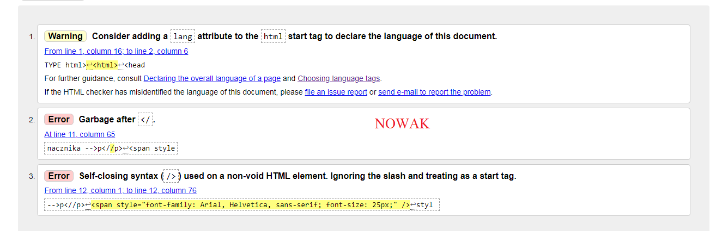
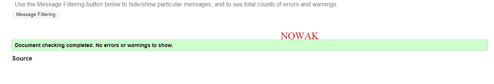

Co jest walidacja strony HTML oraz CSS?
Walidacja zatem jest to takie działanie, które ma na celu sprawdzenie obecności błędów na danej stronie internetowej, która jest w budowie. Walidacja strony internetowej to ściśle określone działania,
mające na celu sprawdzenie czy budowa strony zawiera błędy.
link do walidatora

